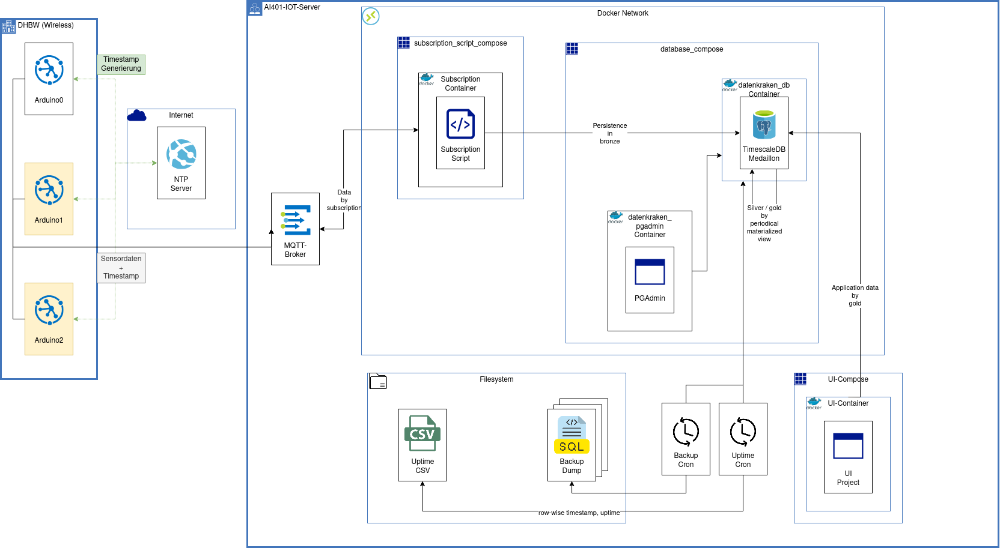

Building Block View
The following picture shows the top-level decomposition of the DATENKRAKEN system. The picture mainly shows the infrastructure and data paths and their purpose. While all components are relevant for the final solution their position may change, based on their color within the picture. By default the shown components aren't supposed to move within the next iterations, except for yellow components. Those components are either not part of the bare mvp (arduino1, arduino2), or may move within the shown containers (subscription container). The decision making is primarly illustrated within chapter 4 and 9.

DHBW (Wireless)
This container shows all physical devices, that communicate via a wireless connection (e.g. wifi) within the digitalcampus. Therefore it primarily shows arduinos (and later edge devices like esp32). Arduinos do communicate with a remote ntp server in order to being able to create timescape for their collected data points that are sent to the proper mqtt topic. For further information regarding the arduino setup take a look at Chapter: Arduino Components.
AI401-IOT-Server
This container holds all components that are run within the IoT Server within the digitalcampus. Except for the mqtt broker those components are either a docker compose or (within a compose) docker containers. Containers within the compose are suppossed to communicate via the docker container network. Composes communicate via the internal linux network.
Subscription Container
This container holds a script that primarly fetches new data from the mqtt broker in order to persist this data into the bronze layer of our used database.
This is held within a seperate docker compose in order to seperate its configuration and its resetability. It's also part of the central docker network datenkraken-db-net, in order to ensure that the database port doesnt have to be exposed to the host.
DB-Container
This container holds "TimescaleDB", a postgres database service with plugins for optimized timeseries handling. It's architecture is based on the medaillon architecture. Therefore it consists of a table for the bronze layer (raw data), and either a materialized view (periodically fetched) for the silver layer (cleaned, augmented) and gold layer (production ready data).
This is held within a seperate docker compose in order to seperate its configuration and its resetability. It's also part of the central docker network datenkraken-db-net, in order to ensure that the communication with the subscription container doesnt have to be via the docker host.
PGAdmin
This container holds "PGAdmin", a web interface to interact with the postgres database.
Cron Jobs
We suppose two cron jobs. One that fetches the database and retrieves a backup in the form of a pgdump each day (00:00), and one the retrieves the uptime of the database each minute. The output of the uptime is saved into a csv file of the form postgres_start_time,recorded_time.
The backup is then persisted on cloud periodically.
UI-Container
This container isn't further specified yet. It's supposed to hold the code for the ui and host a webserver to access it. Due to it's current state its position within the architecture remains unchanged, so do not be confused about it right now.